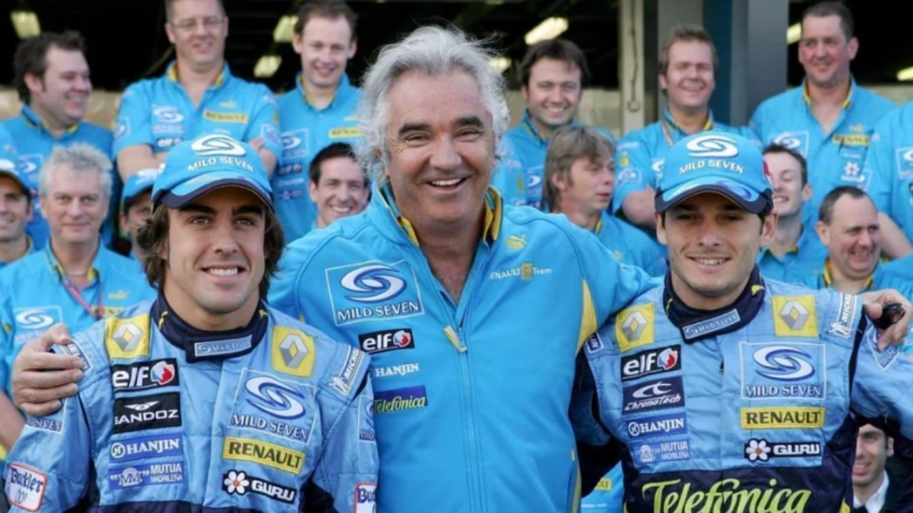
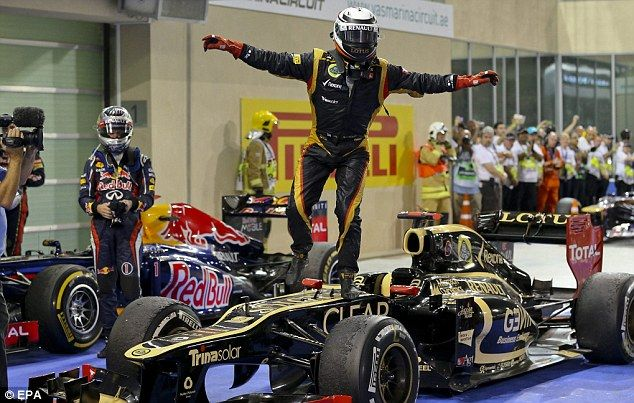
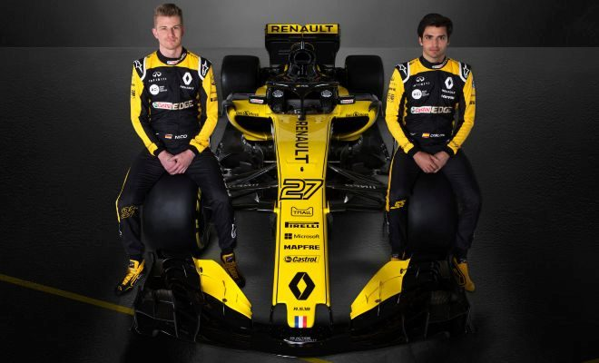
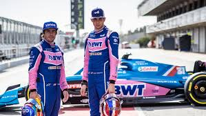
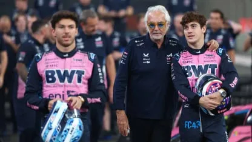

Renault F1 team: Historia, campeonatos y actualidad con Alpine

Franco Colapinto en el Road Show de BsAs 2026
Franco Colapinto en el Road Show de BsAs 2026
A comienzos de los años 2000, Renault regresó oficialmente a la Formula One con el objetivo de volver a competir al máximo nivel. Sin embargo, la marca francesa ya tenía una importante historia dentro de la categoría desde décadas anteriores. Durante los años 70 y 80, Renault se destacó por introducir los motores turbo en la Fórmula 1, una innovación que cambió el deporte y que luego sería utilizada por muchos otros equipos. Más adelante, en los años 90, la empresa tuvo una etapa muy exitosa como proveedora de motores, trabajando junto a equipos históricos como Williams y Benetton. Gracias a esa asociación lograron múltiples campeonatos mundiales junto a pilotos como Nigel Mansell, Alain Prost y Michael Schumacher.
Cuando Renault volvió como equipo oficial en los años 2000, la Fórmula 1 estaba dominada casi por completo por Ferrari y Schumacher. Aun así, la escudería francesa comenzó a destacarse rápidamente gracias al desarrollo de autos competitivos, una gran organización técnica y la apuesta por jóvenes pilotos talentosos, entre ellos un español llamado Fernando Alonso.
La gran apuesta de Renault en esos años fue el joven piloto español Fernando Alonso, quien había debutado en la Formula Uno en 2001. Bajo la dirección del jefe de equipo italiano Flavio Briatore, Renault decidió apostar fuertemente por Alonso como el futuro líder del proyecto. En 2003 se convirtió en piloto titular junto al experimentado piloto italiano Jarno Trulli y rápidamente comenzó a demostrar su talento. Ese mismo año consiguió su primera victoria en el Gran Premio de Hungría, convirtiéndose en ese momento en el piloto más joven en ganar una carrera de Fórmula 1. Gracias a su velocidad, agresividad y madurez al volante, Alonso empezó a ser considerado una de las futuras estrellas de la categoría.
En 2004 Renault continuó creciendo como equipo y logró competir regularmente contra Ferrari, McLaren y Williams. Aunque todavía no tenían el mejor auto de la parrilla, el proyecto mostraba una gran evolución técnica y estratégica. Tras la salida de Trulli, Alonso pasó a compartir equipo con el piloto canadiense Jacques Villeneuve (campeón del mundo en 1997) en las últimas carreras de 2004, y posteriormente con el italiano Giancarlo Fisichella en 2005 y 2006. Fisichella tuvo un rol importante ayudando al equipo a sumar puntos clave para el campeonato de constructores, aunque Alonso era claramente el líder deportivo de la escudería.
En 2005 Renault presentó el R25, un auto muy competitivo que se destacó por su equilibrio, confiabilidad y gran rendimiento en curvas. Alonso consiguió varias victorias importantes y mantuvo una enorme regularidad durante toda la temporada, mientras Ferrari atravesaba problemas poco habituales. Finalmente logró consagrarse campeón del mundo con apenas 24 años, terminando con el dominio que Michael Schumacher y Ferrari habían mantenido durante años. Schumacher incluso llegó a reconocer públicamente el talento de Alonso y lo señaló como uno de los pilotos más fuertes de la nueva generación. Además del campeonato de pilotos, Renault también obtuvo el campeonato de constructores, completando una temporada histórica.
En 2006 Renault volvió a enfrentarse directamente con Ferrari y Schumacher en una de las rivalidades más recordadas de la década. El Renault R26 mantuvo un altísimo nivel de rendimiento y Alonso protagonizó intensas batallas en pista contra el siete veces campeón del mundo. La pelea por el título se definió recién en las últimas carreras, pero la constancia de Alonso, el trabajo estratégico del equipo dirigido por Briatore y la confiabilidad del auto fueron claves para conseguir nuevamente los campeonatos de pilotos y constructores. Con ese bicampeonato consecutivo, Renault alcanzó el punto más alto de su historia moderna en Fórmula 1 y Alonso se consolidó definitivamente como una de las mayores figuras del automovilismo mundial.

Fernando Alonso, Flavio Briatore y Giancarlo Fisichella durante la epoca en Renault
Tras la salida de Fernando Alonso hacia McLaren en 2007, Renault comenzó a perder el nivel dominante que había mostrado en las temporadas anteriores. Aunque el equipo seguía siendo competitivo, ya no contaba con la misma regularidad ni con un auto capaz de luchar constantemente por campeonatos. Durante 2007 y gran parte de 2008 Renault quedó detrás de Ferrari y McLaren en rendimiento, mientras intentaba reorganizarse tras la pérdida de su principal piloto y varias figuras importantes del equipo técnico.
A mediados de 2008 Alonso regresó a Renault luego de su conflictiva etapa en McLaren. Sin embargo, el equipo atravesaba un momento difícil y los resultados eran muy irregulares. Aun así, hacia el final de la temporada el rendimiento del auto mejoró y Alonso consiguió una inesperada victoria en el Gran Premio de Singapur 2008, la primera carrera nocturna en la historia de la Formula Uno. En aquel momento el triunfo fue celebrado como una gran recuperación del equipo, pero un año después se descubrió que la carrera había estado manipulada en uno de los mayores escándalos de la Fórmula 1 moderna.
El caso pasó a conocerse como el Crashgate. Según la investigación oficial, el compañero de Alonso, Nelson Piquet Jr., recibió la orden de provocar deliberadamente un accidente para favorecer la estrategia de Alonso y provocar la salida del safety car en un momento clave de la carrera. El plan terminó beneficiando al piloto español, que había parado en boxes antes del accidente y pudo avanzar hasta ganar el Gran Premio. Aunque nunca se demostró que Alonso supiera del plan, el escándalo dañó seriamente la imagen de Renault.
Como consecuencia de la investigación, Flavio Briatore fue expulsado de la Fórmula 1 de manera indefinida —aunque años después la sanción fue anulada judicialmente— y otros miembros importantes del equipo también abandonaron la escudería. Desde ese momento Renault comenzó un lento declive dentro de la categoría. Aunque siguió participando en Fórmula 1 y más adelante obtuvo éxitos como proveedor de motores, nunca volvió a alcanzar el nivel dominante que había tenido durante la etapa de Alonso y los campeonatos de 2005 y 2006.

Piquet Jr. chocó en Singapur 2008 para que ganara Alonso
Durante gran parte de la década de 2010, Renault atravesó una de las etapas más inestables y difíciles de su historia en la Formula Uno. Después del escándalo del Crashgate y de la salida de figuras importantes como Flavio Briatore, el equipo comenzó a perder protagonismo de manera progresiva. Aunque todavía conseguían algunos buenos resultados aislados, Renault ya no tenía la estabilidad ni el rendimiento que había mostrado durante la época de los campeonatos con Fernando Alonso.
Entre 2010 y 2011 la estructura original del equipo sufrió importantes cambios administrativos y económicos. Renault pasó a tener participación parcial dentro de la escudería, mientras el equipo empezó a competir bajo el nombre de Lotus Renault GP. Durante esos años pasaron pilotos reconocidos como Robert Kubica, quien se convirtió rápidamente en el líder del proyecto gracias a grandes actuaciones. Sin embargo, su grave accidente de rally en 2011 cambió completamente el rumbo del equipo. Tras la ausencia de Kubica, Renault comenzó a depender de pilotos como Vitaly Petrov, Bruno Senna y más adelante Kimi Räikkönen, quien logró algunas victorias y podios entre 2012 y 2013, siendo uno de los pocos momentos realmente positivos de aquella etapa.

Kimi Raikonen en el Lotus Renault en 2012
Aunque Renault como equipo ya no dominaba la Fórmula 1, la marca todavía tenía éxito como proveedora de motores. Sus motores impulsaron al equipo Red Bull Racing durante los campeonatos de Sebastian Vettel entre 2010 y 2013. Sin embargo, con la llegada de la nueva era híbrida en 2014 comenzaron los problemas más graves para Renault. Los nuevos motores turbo híbridos desarrollados por Mercedes resultaron muy superiores en potencia, eficiencia y confiabilidad, mientras Renault quedó claramente atrasada respecto a sus rivales. Los equipos que utilizaban motores Renault sufrían constantes fallas mecánicas, pérdida de potencia y problemas de fiabilidad, algo que generó fuertes críticas dentro del paddock.
La relación entre Renault y Red Bull se deterioró rápidamente debido a esos problemas. En varias ocasiones, directivos y pilotos de Red Bull criticaron públicamente el bajo rendimiento de los motores franceses, especialmente después de temporadas llenas de abandonos y dificultades técnicas. Esa tensión dañó aún más la imagen de Renault dentro de la Fórmula 1 y mostró el complicado momento que atravesaba la marca. Finalmente, en 2016 Renault decidió volver oficialmente como equipo completo tras comprar nuevamente la estructura de Lotus, intentando reconstruir el proyecto desde cero.
Durante los últimos años de la década, Renault logró mejorar lentamente su situación, pero nunca consiguió volver a pelear por campeonatos. Pasaron por el equipo pilotos importantes como Nico Hülkenberg, Carlos Sainz Jr. y el regreso de Alonso en 2021 bajo el nombre de Alpine. Aun así, muchos aficionados consideran que la década de 2010 marcó el gran declive de Renault como potencia dominante de la Fórmula 1, muy lejos del nivel que había alcanzado durante sus años dorados de 2005 y 2006.

Nico Hulkemberg y Carlos Sainz en Renault
En 2021, Renault decidió cambiar oficialmente el nombre de su escudería a Alpine. La razón principal fue promocionar la marca deportiva Alpine, una división de autos de alto rendimiento perteneciente al grupo Renault. Con este cambio, la empresa buscaba darle una identidad más moderna y deportiva al proyecto dentro de la Formula Uno, aunque técnicamente el equipo seguía siendo la continuación directa de Renault. Además del nuevo nombre, también presentaron una nueva decoración azul inspirada en los colores históricos de Francia en el automovilismo.
Uno de los mayores acontecimientos de esta nueva etapa fue el regreso de Fernando Alonso a la Fórmula 1 después de dos años fuera de la categoría. Alonso volvió como compañero del francés Esteban Ocon, aportando experiencia y liderazgo al proyecto. Aunque el equipo todavía estaba lejos de luchar por campeonatos, Alpine mostró algunos avances importantes durante 2021. El momento más destacado llegó en el Gran Premio de Hungría, donde Ocon consiguió la primera victoria en la historia de Alpine y la última victoria de la estructura Renault hasta la actualidad. En aquella carrera, Alonso también tuvo un papel fundamental defendiendo su posición frente a Lewis Hamilton durante varias vueltas, ayudando indirectamente a que Ocon mantuviera el liderazgo hasta el final.

Alonso y Esteban Ocon en Alpine
En 2022 Alpine continuó creciendo y logró terminar en una buena posición dentro del campeonato de constructores. Alonso consiguió varios resultados sólidos y podios, mientras el equipo seguía mostrando mejoras en rendimiento. Sin embargo, también aparecieron muchos problemas de confiabilidad mecánica, especialmente en el motor, algo que ya había afectado a Renault en años anteriores. Además, comenzaron tensiones internas relacionadas con el futuro de Alonso y el manejo deportivo del equipo.
La situación explotó a mediados de 2022 cuando Alonso anunció sorpresivamente su salida hacia Aston Martin para 2023. Alpine esperaba ascender al joven australiano Oscar Piastri, pero el piloto negó públicamente haber firmado contrato con el equipo y finalmente terminó marchándose a McLaren. Este episodio generó una gran polémica y dejó muy mal parada a Alpine en términos de organización y manejo interno.
Durante 2023 y 2024 el equipo atravesó nuevamente una etapa irregular. Pasaron pilotos como Ocon y Pierre Gasly, pero Alpine sufrió constantes cambios de directivos, problemas técnicos y una importante pérdida de competitividad frente a otros equipos de la zona media. Aunque ocasionalmente lograban buenos resultados, el proyecto parecía cada vez más inestable y lejos del nivel que Renault había alcanzado en sus mejores años junto a Alonso.

Victoria de Esteban Ocon en Hungria 2021
La temporada 2025 comenzó como otro año complicado para Alpine. Luego de varios cambios internos y malos resultados en temporadas anteriores, la escudería atravesaba una fuerte crisis deportiva y organizativa. Uno de los regresos más llamativos fue el de Flavio Briatore, histórico jefe del equipo durante la época de los campeonatos de Fernando Alonso. Tras años alejado de la Fórmula 1 luego del escándalo del Crashgate, Briatore volvió como una de las principales figuras del proyecto deportivo de Alpine, buscando reconstruir un equipo que llevaba años lejos de los primeros puestos.
El equipo inició 2025 con la dupla formada por Pierre Gasly y el australiano Jack Doohan, joven surgido de la academia Alpine e hijo del múltiple campeón de motociclismo Mick Doohan. Había muchas expectativas sobre Jack, ya que Alpine lo presentaba como una apuesta a futuro, pero el comienzo de temporada fue muy difícil. Los malos resultados, errores en carrera y la falta de puntos generaron rápidamente dudas dentro del equipo, especialmente en un contexto donde Alpine necesitaba resultados urgentes para salir del fondo de la parrilla.
En paralelo, Alpine había contratado a comienzos de 2025 al argentino Franco Colapinto como piloto de reserva tras su aparición en Williams durante 2024. Desde sus primeras pruebas y trabajos en simulador, Briatore mostró interés en su potencial y comenzó a crecer el rumor de un posible reemplazo de Doohan. Finalmente, después del Gran Premio de Miami, Alpine tomó la decisión de subir a Colapinto como piloto titular desde Imola, mientras Doohan volvía al rol de reserva. La medida coincidió además con cambios internos importantes dentro de la dirección del equipo y reforzó todavía más la influencia de Briatore dentro de Alpine.

En su ultima carrera, Doohan chocó en el GP de Japon 2025 (jasjajajaja)
Aunque el Alpine seguía siendo uno de los autos más débiles de la parrilla, Colapinto logró destacarse por su adaptación rápida, buen ritmo en clasificación y una mayor consistencia respecto a las carreras anteriores del equipo. Sus actuaciones generaron un fuerte apoyo de los aficionados argentinos y latinoamericanos, además de atraer nuevos patrocinadores importantes para la escudería. Con el paso de las carreras, Alpine confirmó que Colapinto continuaría como piloto titular y finalmente le aseguró un contrato para toda la temporada 2026 junto a Gasly.
Hasta el Gran Premio de Miami de 2026, la dupla formada por Pierre Gasly y Franco Colapinto se encuentra atravesando uno de los mejores momentos recientes de Alpine. El equipo logró dar un importante salto de rendimiento respecto a temporadas anteriores y actualmente pelea en los primeros puestos del campeonato de constructores, mostrando una mejora notable tanto en velocidad como en regularidad. Gasly aporta experiencia y constancia, mientras que Colapinto se convirtió rápidamente en una de las revelaciones de la temporada gracias a sus buenos resultados y rápidas adaptaciones a la categoría.
Además, la dirección encabezada por Flavio Briatore parece haber devuelto cierta estabilidad al proyecto deportivo. Con el nuevo reglamento técnico y una base competitiva mucho más sólida, dentro del equipo existe un gran optimismo de cara al futuro, especialmente después de asegurar la continuidad de Colapinto para la temporada 2026.

El argentino Franco Colapinto jutno a su compañero Pierre Gasly y Flavo Briatore en Alpine